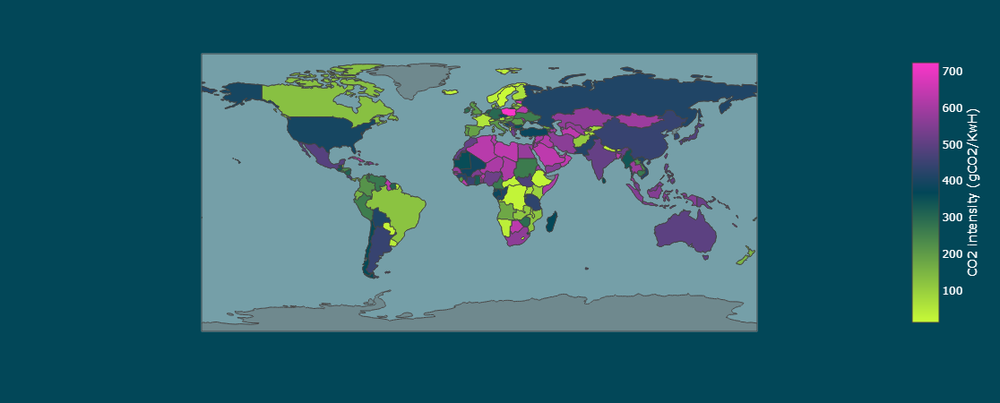

Visualize
Offline
The package also comes with a Dash App containing illustrations to understand the emissions logged from various experiments across projects.
The App currently consumes logged information from a CSV file, generated from an in-built logger in the package.
The App can be run by executing the below CLI command that needs following arguments:
filepath- path to the CSV file containing logged information across experiments and projectsport- an optional port number, in case default [8050] is used by an existing process
carbonboard --filepath="examples/emissions.csv" --port=3333
Summary and Equivalents
Users can get an understanding of net power consumption and emissions generated across projects and can dive into a particular project. The App also provides exemplary equivalents from daily life, for example:
Weekly Share of an average American household
Number of miles driven
Time of 32-inch LCD TV watched

Regional Comparisons
The App also provides a comparative visual to benchmark emissions and energy mix of the electricity from the grid across different countries.

Cloud Regions
The App also benchmarks equivalent emissions across different regions of the cloud provider being used and recommends the most eco-friendly region to host infrastructure for the concerned cloud provider.

Online (Beta)
A Dash App is also aviable for those who chose to connect the package to the API then data are public and aviable for all to explore.
preview
from global…
Showing on the top the global energy consumed and emissions produced at an organisation level and the share of each project in this. The App also provides comparison points with daily life activity to get a better understanding of the amount generated.

to more and more…
Each project can be divided into several experiments, and in each experiment several runs can happen. The total emissions of experiments is shown on the barchart on the right hand side, and the runs on the bubble chart on the left hand side. If ever your project has several experiments you can switch from one experiment’s runs in the bubble chart to another’s by clicking the bar chart.

detailed
Clicking on one bubble, you can display the runtime series and see its metadata.

Electricity production carbon intensity per country
The app also provides a visualization of regional carbon intensity of electricity production.
{kind=link}
Note that for now, all data sent to CodeCarbon API are public.